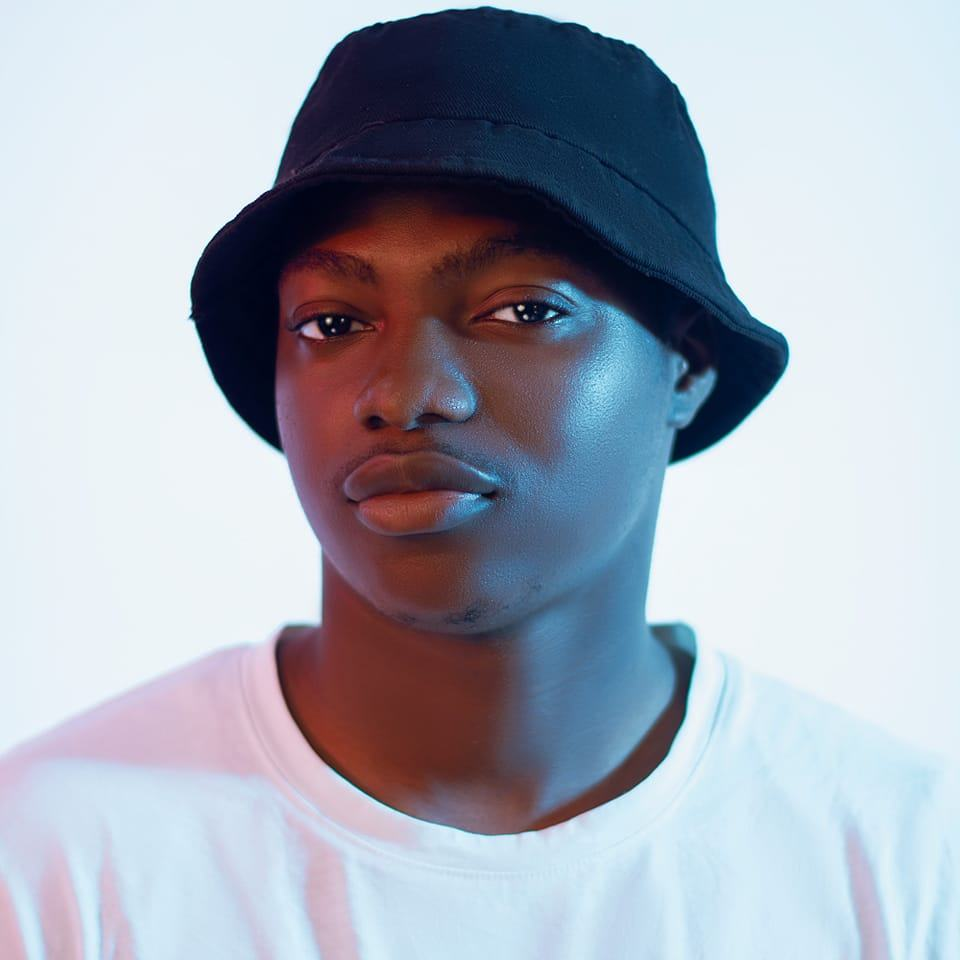

Akanni Ademola Omobolaji | WDD 130
Hello, my name is Akanni Ademola Omobolaji. The name 'Ademola' means crown on wealth and 'Omobolaji' means a child that woke up with wealth. I currently live in Ibadan City. All my life grew and stayed within the south-west region of Nigeria, Yoruba Land, my ethnic tribe. I am proud to be a Yoruba Man. I love music. I enjoy singing, composing and producing music. It is what I do for fun and I hope that one day I will be able to turn that into more than a hobby. Meanwhile, I want to be a web and graphic designer as a way to develop my visual intelligence and become more skilled so as to earn a living. Thank you.